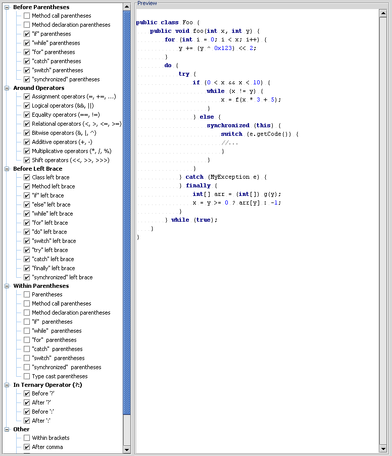

Guide for Mondrian developers
There are several ways to get Mondrian running. The easiest is to download a
binary release, as described in the installation guide.
But you can also build Mondrian from its source code.
Getting the source code
First, you need to get a copy of the source code. You can get the source code
from SourceForge or from the project's Perforce source server.
Download the latest mondrian-version.zip from
SourceForge, and unzip. Now find the mondrian-version-src.zip
inside this distribution, and unzip it. The directory you unzip this source code to —
typically something like C:\open\mondrian
or /usr/local/mondrian-x.y.z — will be denoted
${project.location} later in this document.
If you are a mondrian developer, and need to access the latest source code
and check in changes, you should connect to the Perforce source-code server. If
you are not a developer, but are interested in getting the latest code, you can
connect as the 'guest' user.
- Download the perforce client from
http://www.perforce.com/perforce/loadprog.html
- If you have Windows, start the perforce UI (P4Win). (If you are not
running windows, you will have to use the command-line interface to do the
following; 'p4 help' should get you started.)
- Choose
Settings > Switch Port Client User...;
the following dialog appears.

- Set
Server to perforce.eigenbase.org;
Port to 1666; set User to
your SourceForge username (usually guest, unless you are a commiter
to the project); set
Client to your username plus the name of your machine (for
example, guest.jhyde.stilton).
- Choose
ClientSpec > New... and
create a client with the same name. Set its root to something like
'C:\' or 'D:\work', and view specification of
//open/mondrian/... //<<clientname>>/mondrian/...
- Sync to head revision.
If you are a regular contributor to the Mondrian project, we will give you
commiting privileges to the source code server. You will be able to add, edit,
and delete files in the source system, and commit changelists. Usually we ask
you to prove your worth with a few tasks before welcoming you to the team; contact Julian Hyde for
more information on how to join the team.
Building the code
Next, install a build environment. Install the JDK, Ant, Tomcat, Xalan,
and JUnit, and set JAVA_HOME, ANT_HOME,
TOMCAT_HOME, XALAN_HOME, JUNIT_HOME in
your environment.
Download the latest jpivot-version.war from
the JPivot project at SourceForge and
save it as ${project.location}/lib/jpivot.war.
Now build the code, as follows:
C:\mondrian> ant
Buildfile: build.xml
sniff:
prepare:
parser:
[javacup] Opening files...
[javacup] Parsing specification from C:\mondrian\src\main\mondrian\olap\Parser.cup...
[javacup] Checking specification...
[javacup] Warning: Terminal "UNKNOWN" was declared but never used
[javacup] Warning: Non terminal "unsigned_integer" was declared but never used
[javacup] Building parse tables...
[javacup] Computing non-terminal nullability...
[javacup] Computing first sets...
[javacup] Building state machine...
[javacup] Filling in tables...
[javacup] Checking for non-reduced productions...
[javacup] Writing parser...
[javacup] Closing files...
[javacup] ------- CUP v0.10k Parser Generation Summary -------
[javacup] 0 errors and 2 warnings
[javacup] 47 terminals, 49 non-terminals, and 100 productions declared,
[javacup] producing 153 unique parse states.
[javacup] 2 terminals declared but not used.
[javacup] 0 non-terminals declared but not used.
[javacup] 0 productions never reduced.
[javacup] 0 conflicts detected (0 expected).
[javacup] Code written to "Parser.java", and "ParserSym.java".
[javacup] ---------------------------------------------------- (v0.10k)
generate.resources:
[javac] Compiling 2 source files to D:\open\mondrian\classes
[resgen] Generating D:\open\mondrian\src\main\mondrian\olap\MondrianResource.java
[resgen] Generating D:\open\mondrian\src\main\mondrian\olap\MondrianResource.properties
[resgen] Generating D:\open\mondrian\src\main\mondrian\olap\MondrianResource_en_US.java
[resgen] Generating D:\open\mondrian\src\main\mondrian\olap\MondrianResource_en_US.properties
[resgen] Generating D:\open\mondrian\src\main\mondrian\olap\MondrianResource_de_DE.java
[resgen] Generating D:\open\mondrian\src\main\mondrian\olap\MondrianResource_de_DE.properties
def:
[xomgen] Writing src\main\mondrian\olap\mondrian.dtd
[xomgen] Writing src\main\mondrian\olap\MondrianDef.java
[xomgen] Done
[copy] Copying 1 file to D:\open\mondrian\lib
compile.java:
[javac] Compiling 791 source files to D:\open\mondrian\classes
[javac] Note: Some input files use or override a deprecated API.
[javac] Note: Recompile with -deprecation for details.
compile.jsp.maybe:
copy.properties:
[copy] Copying 4 files to D:\open\mondrian\classes
compile:
BUILD SUCCESSFUL
Total time: 46 seconds
Installing the database
Before you run the regression test suite or the web application, you must
install the standard FoodMart dataset. This is described in the
installation guide.
If you got your files from the Perforce server, you can skip the step
where you download the data sets: you should already have the files demo/access/MondrianFoodMart.mdb
and demo/FoodMartCreateData.zip.
At the command line:
cd ${project.location}
ant test
Running the test via the Mondrian Ant build in Eclipse works, too.
Example output:
Buildfile: C:\Documents and Settings\swood\My Documents\perforce\open\mondrian\build.xml
test-postgres:
sniff:
prepare:
parser:
[javacup] Files are up to date.
compile.xom:
compile.resgen:
generate.resources:
[resgen] C:\...\src\main\mondrian\olap\MondrianResource.java is up to date
[resgen] C:\...\src\main\mondrian\olap\MondrianResource.properties is up to date
[resgen] C:\...\main\mondrian\olap\MondrianResource_en_US.java is up to date
[resgen] C:\...\src\main\mondrian\olap\MondrianResource_en_US.properties is up to date
[resgen] C:\...\src\main\mondrian\olap\MondrianResource_de_DE.java is up to date
[resgen] C:\...\src\main\mondrian\olap\MondrianResource_de_DE.properties is up to date
def:
compile.java:
compile.jsp.maybe:
copy.properties:
compile:
info:
[echo] ==============================================================
[echo] | Mondrian configuration info |
[echo] ==============================================================
[echo] project.location = C:\...
[echo] jdk.home = C:\j2sdk1.4.2_06
[echo] catalina.home = ${env.CATALINA_HOME}
[echo] xalan.home = ${env.XALAN_HOME}
[echo] junit.home = ${env.JUNIT_HOME}
[echo] weblogic.home = ${env.WEBLOGIC_HOME}
[echo] mondrian.foodmart.catalogURL = file:///C:\.../demo/FoodMart.xml
[echo] ==============================================================
compile.tests:
[javac] Compiling 28 source files to C:\...\testclasses
[javac] Note: C:\...\testsrc\main\mondrian\test\ParameterTest.java uses or overrides a deprecated API.
[javac] Note: Recompile with -deprecation for details.
test-dbms:
[echo] Connecting to jdbc:postgresql://localhost/FM3
[java] Mondrian: properties loaded from 'file:/C:/.../mondrian.properties'
[java] Mondrian: properties loaded from 'file:/C:/../build.properties'
[java] Mondrian: loaded 4 system properties
[java] testName: null
[java] testClass: null
[java] All 1 thread(s) started.
[java] [0] .Mondrian: JDBC driver org.postgresql.Driver loaded successfully
[java] Mondrian: JDBC driver sun.jdbc.odbc.JdbcOdbcDriver loaded successfully
[java] Mondrian: JDBC driver com.mysql.jdbc.Driver loaded successfully
[java] Mondrian: JDBC driver oracle.jdbc.OracleDriver loaded successfully
[java] .......................................
[java] [40] ........................................
[java] [80] ........................................
[java] [120] ........................................
[java] [160] ........................................
[java] [200] ........................................
[java] [240] ........................................
[java] [280] ........................................
[java] [320] ........................................
[java] [360] ........................................
[java] [400] ........................................
[java] [440] ........................................
[java] [480] ........................................
[java] [520] ........................................
[java] [560] ........................................
[java] [600] ..................
[java] OK (618 tests)
[java] Time: 711.63
[java] Normal termination.
BUILD SUCCESSFUL
Total time: 12 minutes 13 seconds
Create, deploy and start the web application
At the command prompt, type
ant war
This will create lib/mondrian.war. Copy mondrian.war
to the TOMCAT_HOME/webapps directory.
Now, start Tomcat and hit http://localhost:8080/mondrian.
Coding style
If you are contributing code, please follow the same guidelines used for the
rest of the code. ("When in Rome, do as the Romans do.")
Code content:
- Declare variables as near to their first use as possible.
- Don't initialize variables with 'dummy' values just
to shut up the compiler.
- One declaration per line is recommended.
- Only one top-level class should be defined per java file.
Documentation and comments:
- Source files must contain copyright and license notices.
- Classes and public methods must have javadoc.
- Write Javadoc comments on
methods in the present active ('Collects garbage.'), not
the imperative ('Collect garbage.'), passive ('Garbage is collected.'),
or future active ('Will collect garbage.').
- When editing HTML documents, please don't use an editor which reformats
the HTML source (such as Microsoft Word).
Spacing and indentation:
- Use spaces, not tabs.
- Indentation 4.
- Open braces on the same line as the preceding 'if', 'else', 'while'
statement, or method or 'class' declaration.
- Use braces even for single-line blocks.
- Try to keep lines shorter than 80 characters.
The following images show my spacing and indentation settings in IntelliJ.


These are the products I used to build mondrian. Install all of the products
marked 'required'.
In the following, the symbol ${project.location} means the root of your
source tree.
| Product |
Required? |
Version |
Comment |
| JDK |
Yes |
1.4 or later (I use version 1.4.2.) |
Available from http://developer.java.sun.com/. I downloaded j2sdk-1_4_2_06-windows-i586-p.exe,
and extracted to E:/j2sdk1.4.2_06. Set JAVA_HOME
to same. |
| Ant |
Yes |
1.5 or later |
Available from http://ant.apache.org/bindownload.cgi.
I downloaded apache-ant-1.6.2-bin.zip, extracted to E:/jakarta-ant-1.6.2,
and set ANT_HOME to the same. |
| Tomcat |
Yes |
5.0.25 or later |
Available from http://jakarta.apache.org/tomcat. I downloaded
jakarta-tomcat-5.0.25.zip, extracted to E:/jakarta-tomcat-5.0.25,
and set TOMCAT_HOME to the same. |
| Xerces |
|
Use the version included with Tomcat |
Xerces is included with Tomcat. If you use a different
version, compatibility issues may arise. |
| Xalan |
Yes |
2.6.0 or later |
Available from http://xml.apache.org/xalan-j/. I downloaded xalan-j_2_6_0-bin.zip,
extracted to E:/xalan-j_2_6_0, and set XALAN_HOME
to the same.
Important: copy XALAN_HOME/bin/xalan.jar
to TOMCAT_HOME/common/endorsed/.
|
| JUnit |
Yes |
3.8.1 or later |
Available from http://www.junit.org/.
I downloaded junit3.8.1.zip, extracted to E:/junit3.8.1,
and set JUNIT_HOME to the same. |
| JavaCUP (parser generator) |
Included with source distribution, as lib/javacup.jar. |
v0.10g (with modifications) |
Available from http://www.cs.princeton.edu/~appel/modern/java/CUP/.
I modified version v.0.10g to add an Ant task, and to output error
messages in a format which Emacs can parse. |